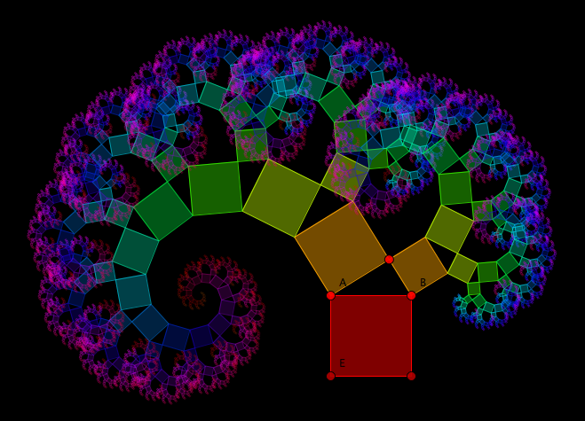
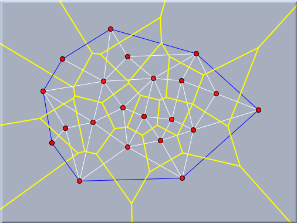
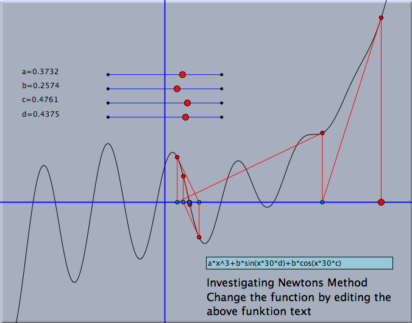
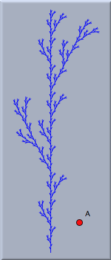
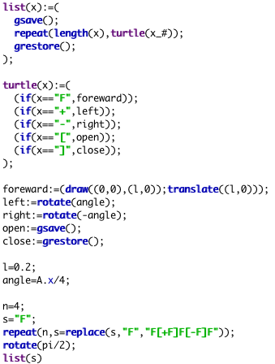

プログラミング環境
CindyScript は、あらゆる面でシンデレラを強化する道具です。それは、シンデレラの幾何学部分と CindyLab のシミュレーション部分を相互につなぐことができるように設計されています。その機能的な設計はインタラクティブな試作品を素早く作れる高水準プログラミング言語となっています。 CindyScript は、図形の出力とマウスの操作に対応するものはシンデレラの幾何学部分に、物理シミュレーションは CindyLab に、いわば外注して利用しています。そのため、ユーザーは中核となる問題をプログラムすることに集中できます。望ましい表示をするために、わずかなコードが必要になることはよくあります。しかし、これは普通のプログラミングとは正反対です。普通は、プログラムの相当な部分が、マウスを使ったユーザーインターフェースの作成に費やされているからです。
応用例
他のプログラミング言語と同様に、
CindyScript の可能性は限りがなく、制限があるとすれば、ユーザーの想像力(と、ときにはディスクスペース)でしょう。とはいえ、中心的な応用場面を少し示しましょう。
描画力の向上
CindyScript の中心的な機能の一つは、幾何の表示画面に図形を表示するプログラムが作れることです。シンデレラの動的な幾何学で、ぎりぎりまで多くの要素を使って作図をしたいことがよくあります。 CindyScript を使えば、こういった要素を自動的に作り出すことができます。
CindyScript は幾何変換を扱えるので、わずかなコードで複雑な図形を作ることができます。
 |
| 「ピタゴラス」の木をスクリプトで描いた |
プログラムされた描画
動的な幾何学への古典的なアプローチでは処理できない特別なものがあります。動的な幾何学で作図したものは、本質的にはすべての計算が行われる、分岐のないプログラムのようなものです。したがって、論理的な判断やアルゴリズム的なものを動的幾何学に含むことは本質的に困難です。 通常、これらの問題は、 ブール点と呼ばれる交点特性によって、条件付きで要素の可視的振舞いをコントロールすることで解決されます。
シンデレラ２ はこの機能を持っていますが、同時に
CindyScript がこの問題を扱う、よりエレガントな方法を提供します。
CindyScript は任意のアルゴリズムを簡単に実行できる高水準の言語です。したがって、複雑なアルゴリズムであっても動的幾何学の環境に一般的なレベルで含むことができます。図形への出力をそのようなアルゴリズムに含めることができます。
 |
| ドローネ三角網とボロノイダイアグラム |
数学的関数の解析
特に、
CindyScript では高度な関数プロットがおこなえます。微分して極値を表示したりすることができます。関数は直接描画でき、結果をすぐに示せます。これと、シンデレラのHTMLへの書き出し機能を使えば関数の解析を多種多様な方法で行えるインタラクティブなワークシートを簡単に作れます。 関数は、幾何で作図したものの図形的な属性としても定義できるので一つの例の中に図形的な入力と解析的な部品を組み込むことができます。
 |
| ニュートン反復法による解の計算 |
作図したものの振舞いを制御する
CindyScript で自由要素の位置を制御すると特に面白いことが起こります。通常、CindyScript の制御による動きは、ユーザーによって動かされるものより優先されます。簡単な例でこれを示しましょう。 次の図は、三角形の面積を多角形の内部および周上の格子点の個数で計算するピックの定理です。
ピックの定理は、頂点の座標が格子点上にある場合にのみ適用できますが、通常の動的幾何学ではなかなかうまくできません。しかし、次の３行を追加するだけで、３つの頂点の動きをコントロールできます。
A.xy=round(A);
B.xy=round(B);
C.xy=round(C);
これで、点は自由に動かせますが、頂点を最も近い格子点にスナップさせます。この例では、すべての文字と、緑と黄色の点は
CindyScript によって作られたものです。
設計と特徴
CindyScript は、ユーザーが入力するパラメータがいろいろと変化する状況で、数学的問題の要求を満たすプログラムができるように設計されました。多様なデータ型(実数、複素数、リスト、ベクトル、行列)が処理でき、ユーザーの入力に対してリアルタイムに応えることができます。
高度な関数型プログラミング
CindyScript は、関数型プログラミング言語です。これは、すべての処理が関数として行われることを意味します。 関数型のプログラミングは慣れるのに少し時間がかかるかもしれませんが、非常に表現力豊かですので、少しのコードで複雑な状況を記述することが可能です。たとえば、次の３行のコードは100未満の素数を求めて印字します。
divisors(x):=select(1..x,mod(x,#)==0);
primes(n):=select(1..n,length(divisors(#))==2);
print(primes(100));
１行目は、数xを割り切る数のリストを返す関数を定義します。２行目は、nより小さい数のうち、割りきる数が２つだけである数、すなわち素数のリストをつくる関数を定義します。出力結果は次のようになります。
[2,3,5,7,11,13,17,19,23,29,31,37,41,43,47,53,59,61,67,71,73,79,83,89,97]
図形の入出力とともに、これらの高水準プログラミング環境を使うと、他の言語ではできないような可能性が開けます。次の図は、
CindyScript でプログラミングされた自己相似形の植物のような図形です。この植物を生成するプログラムは右に示されています。すべての図を作るのに、基本的な描画と、幾何変換、関数型プログラミング言語だけが用いられています。
 | |
 |
| 植物の成長 |
リアルタイムな計算
CindyScriptは図形の小さな動きでも調べることができます。したがって、図形の描画をリアルタイムで操作できます。ユーザーが点を選んでそれを動かすと、それに対する計算結果を直接観察できます。 CindyScript はインタプリタ型の言語ですが、標準的な状況では図をなめらかに表示するための速さは十分です。ユーザーの入力にすぐに反応できるプログラムは、広範囲な応用とインタラクティブなシナリオ作りに対しておおいに可能性が開けます。 小中学校での利用から大学、さらには洗練された数学的研究まで、応用は広範囲です。次の例は、最小二乗法による線形回帰法のスナップショットです。点が動かされたり加えられると図はダイナミックに更新されます。
正確な計時
CindyScript では時間の取得や物理シミュレーションの時間を同期させるプログラムができます。したがって、時間によって動くシミュレーションを簡単に作ることができます。たとえば、時間制限を設けたインタラクティブなゲームや練習問題をプログラムするのに便利です。 CindyScript を物理シミュレーションのタイミングと同期できることは２つの方向で使うことができます。ひとつは、この方法を物理シミュレーションのをリアルタイムに同期させる技術として使います。あるいは、計算時間とシミュレーション時間を組み合わせて、計算時間に合わせてシミュレーションの速度を調節することができます。
高度な描画
CindyScript の一行コードは、単純な関数のグラフを描くのには十分です。たとえば、plot(sin(x)) は正弦関数のグラフをすぐに描きます。しかし、シンデレラは、最大値、最小値、変曲点を直接表示するようないくつかの可能性と強化された描画機能を提供します。これらの特徴を用いて、関数のビジュアルな解析が可能になります。異なる関数の値に色を割り当てて２次元関数をプロットすることもできます。したがって、２次元データのイメージを簡単に作ることができます。次の図は、２点Ａ，Ｂに対する sin(dist(x-A)*dist(x-B)) の確率密度を示します。